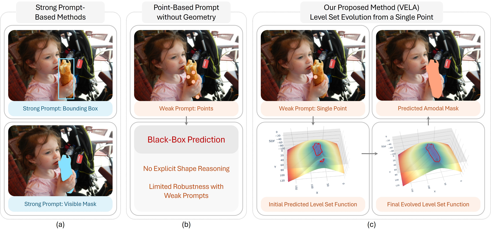
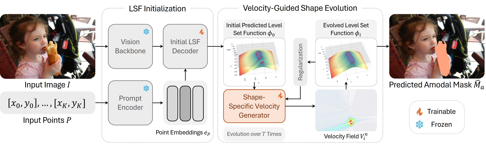
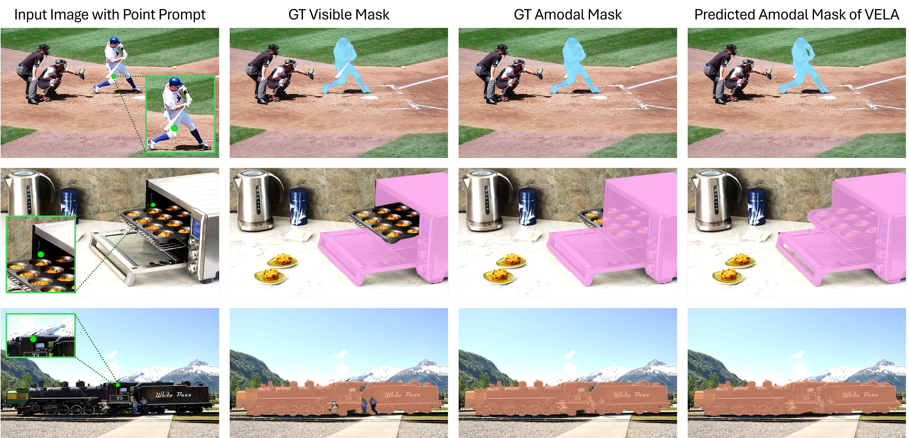

Abstract
Overview
Amodal segmentation aims to recover complete object shapes, including occluded regions with no visual appearance, whereas conventional segmentation focuses solely on visible areas. Existing methods typically rely on strong prompts, such as visible masks or bounding boxes, which are costly or impractical to obtain in real-world settings. While recent approaches such as the Segment Anything Model (SAM) support point-based prompts for guidance, they often perform direct mask regression without explicitly modeling shape evolution, limiting generalization in complex occlusion scenarios. Moreover, most existing methods suffer from a black-box nature, lacking geometric interpretability and offering limited insight into how occluded shapes are inferred. To deal with these limitations, we propose VELA, an end-to-end VElocity-driven Level-set Amodal segmentation method that performs explicit contour evolution from point-based prompts. VELA first constructs an initial level set function from image features and the point input, which then progressively evolves into the final amodal mask under the guidance of a shape-specific motion field predicted by a fully differentiable network. This network learns to generate evolution dynamics at each step, enabling geometrically grounded and topologically flexible contour modeling. Extensive experiments on COCOA-cls, D2SA, and KINS benchmarks demonstrate that VELA outperforms existing strongly prompted methods while requiring only a single-point prompt, validating the effectiveness of interpretable geometric modeling under weak guidance.
01 · Figure
Motivation

02 · Figure
The Proposed VELA Method

03 · Figure
Qualitative Results

Citation
BibTeX
@inproceedings{li2026vela,
title={Single Point, Full Mask: Velocity-Guided Level Set Evolution for End-to-End Amodal Segmentation},
author={Li, Zhixuan and Liu, Yujia and Hui, Chen and Song, Chenyue and Lin, Weisi},
booktitle={ACM International Conference on Multimedia},
year={2026}
}